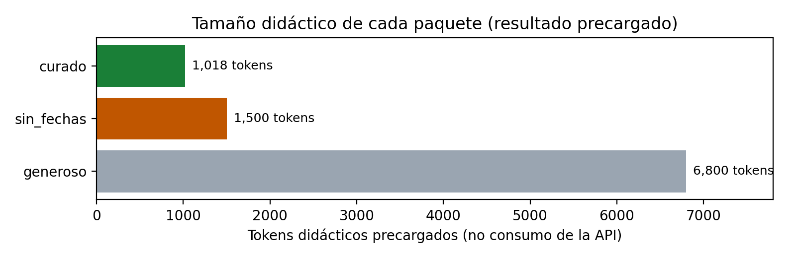

Maestría en Inteligencia Artificial Aplicada
IA5004.10 Sistemas multiagente · Trimestre sept - dic 2026
Skill Lab 3
Evidencia, recuperación y acciones controladas
Comparación de tres paquetes de contexto, flujo condicional con cuatro veredictos propuestos por Luna y autorizados por reglas, y reversibilidad de dos entradas indebidas
Entrega individual
| Oscar Alberto Ramírez Anaya | A01795438 |
Caso: Distribuidora Cuauhtémoc · conjunto común de datos (Skill_Lab_3.zip) · modalidad luna_api
Repositorio: https://github.com/oscar-ramirez-anaya/SkillLab3_A01795438
1 de noviembre de 2026
Resultados técnicos (sección 5, con el detalle en las secciones 2 a 4): 60 %. Interpretación: elección del paquete (sección 2.2) y reversibilidad (sección 4.2): 40 %. La declaración de uso de IA (apéndice A) es requisito. El notebook ejecutado, los datos, el registro de la ejecución, la figura y la fuente de este documento están en el repositorio indicado en la portada.
En Distribuidora Cuauhtémoc, una captura antigua de la brecha del preventista PREV-017 puede llevar a una decisión equivocada (Tecnológico de Monterrey, 2026a), y un caso duplicado o con un identificador inexistente en la bandeja genera trabajo de corrección. Este laboratorio continúa lo que el equipo diseñó en el Construye 3 (mesa de contexto con vigencias por fuente, clases de reversibilidad y prevención frente a compensación) y lo pone a prueba en dos partes:
escalada reserva la decisión a una persona.Es un flujo pequeño con roles separados, no una sociedad completa de agentes: el modelo nunca autoriza la escritura, y la bandeja es una lista en memoria que no se conecta con ningún sistema empresarial.
| Campo | Valor | Uso en el notebook |
|---|---|---|
dias_captura | 32 | Antigüedad simulada de la captura que usa el paquete sin fechas |
tokens_curado | 1,018 | Tamaño didáctico precargado del paquete curado (no es consumo de Luna) |
tienda | T0030 | Tienda del caso válido; con T0002 forma el catálogo TIENDAS_VALIDAS |
producto | P012 | Producto del caso válido; con P002 forma el catálogo PRODUCTOS_VALIDOS |
Modalidad realizada: luna_api. Una consulta al modelo gpt-5.6-luna por Aula Gateway (/v1/chat/completions), con la clave personal introducida por la entrada oculta del notebook; no aparece en celdas, salidas ni en este documento. Solo se enviaron los cuatro casos sintéticos (identificadores 1 a 4 y condiciones verdadero/falso). La misma clase Bandeja revisó cada intento con los datos originales, no con lo que sugirió el modelo.
Instrumento. Notebook del laboratorio (Tecnológico de Monterrey, 2026b) con pandas (McKinney, 2010) y matplotlib (Hunter, 2007), ejecutado completo de principio a fin en una sola sesión: las pruebas del instrumento imprimen "Comprobaciones locales correctas" y el validador de entrega, "Sin campos pendientes".
Tabla tal como la genera el notebook a partir de la dataclass inmutable PaqueteContexto. Los conteos y el uso de la evidencia son resultados didácticos precargados; las dos cifras que salen del conjunto común están en negritas.
| Paquete | Fragmentos | Tokens didácticos | Uso de la evidencia decisiva | Antigüedad de la evidencia |
|---|---|---|---|---|
| generoso | 24 | 6,800 | NO: la captura decisiva quedó diluida | No la usó |
| sin_fechas | 6 | 1,500 | SÍ, pero con evidencia caduca | 32 días |
| curado | 5 | 1,018 | SÍ: evidencia decisiva, fechada y citada | 2 días |

Lectura. El generoso es casi siete veces más grande que el curado (6,800 frente a 1,018 tokens) y aun así no usa la evidencia que decide el caso: más papeles en la mesa no significa mejor respuesta, y la evidencia importante se diluye entre fragmentos irrelevantes, como se ha documentado para contextos largos (Liu et al., 2024). La trampa es el paquete de en medio: con 1,500 tokens es apenas 482 más grande que el curado, responde con seguridad y sí usa la evidencia, pero esa evidencia tiene 32 días. Sin la fecha, nada lo distingue del curado.
Elección: paquete curado. Con 5 fragmentos y 1,018 tokens ocupa cerca del 15 % de la mesa del generoso y, a diferencia de este, usa la captura decisiva. Frente al sin fechas, la diferencia no es el tamaño (1,018 frente a 1,500) sino la vigencia: 2 días contra 32. En el Construye 3 el equipo fijó 14 días como vigencia máxima para precios de competencia (Construye 3, sección de ventanas de vigencia), así que una captura de 32 días ya no describe la brecha actual del PREV-017 y una decisión de precio tomada con ella responde a un mercado que pudo haber cambiado. El curado, además, trae la evidencia fechada y citada, lo que permite auditarla.
Regla de selección que se desprende: primero se filtra por vigencia, después se selecciona lo mínimo que contiene la evidencia decisiva y se cita con su fecha. Es la secuencia seleccionar, comprimir, aislar y citar del módulo, con la vigencia como condición de entrada.
Límites de esta comparación. (1) Los tamaños y el uso de la evidencia están precargados: el notebook no ejecutó búsquedas ni midió la calidad de una respuesta. (2) Los 1,018 tokens no son consumo real de Luna ni un costo calculado. (3) Los 32 días los aporta la simulación; en un sistema real habría que extraer y validar la fecha de cada fuente, y un paquete curado con fechas mal extraídas tendría el mismo problema que el sin fechas. (4) Con un solo caso no se puede generalizar: antes de adoptar la regla habría que medir aciertos en varios casos con fuentes reales.
Antes de escribir, Bandeja.escribir_caso hace tres preguntas en este orden y devuelve un veredicto de conjunto cerrado (ResultadoAccion, un Enum de cuatro valores):
| # | Pregunta | Si la respuesta lo exige | ¿Escribe? |
|---|---|---|---|
| 1 | ¿Existen tienda y producto en el catálogo (T0030, T0002 / P012, P002)? | rechazada_precondicion | No |
| 2 | ¿Ya está registrado ese par tienda-producto? | rechazada_duplicado | No |
| 3 | ¿Hay conflicto con una promoción (dato simulado)? | escalada | No; decide una persona |
| 4 | Pasó las tres comprobaciones | aceptada | Sí, una entrada local |
Cada rechazo es una decisión de diseño trabajando, no un error del sistema. El orden importa: un identificador inexistente se rechaza antes de preguntar por duplicados, y un conflicto solo llega a revisión humana si el caso es válido y nuevo.
Salida literal de la celda del flujo en la ejecución entregada. "Propuesta" y "motivo" son de Luna; "veredicto" y el estado de la bandeja (entradas antes / después) son del control.
| id | Caso | Intento | Propuesta de Luna | Motivo de Luna | Veredicto del control | Bandeja | Igual |
|---|---|---|---|---|---|---|---|
| 1 | Caso válido | T0030 · P012 · sin conflicto | aceptada | La tienda y el producto son válidos, no hay duplicado ni conflicto. | aceptada | 0 / 1 | sí |
| 2 | Tienda inexistente | T9999 · P012 · sin conflicto | rechazada_precondicion | La tienda no es válida. | rechazada_precondicion | 1 / 1 | sí |
| 3 | Duplicado | T0030 · P012 · sin conflicto | rechazada_duplicado | La propuesta está duplicada. | rechazada_duplicado | 1 / 1 | sí |
| 4 | Conflicto con promoción | T0002 · P002 · con conflicto | escalada | Existe un conflicto que requiere escalamiento. | escalada | 1 / 1 | sí |
Bandeja final: 1 entrada. Consumo informado por el servicio: {'modo': 'luna_api', 'origen': 'Luna por Aula Gateway', 'modelo': 'gpt-5.6-luna', 'llamadas': 1, 'tokens_entrada': 261, 'tokens_salida': 173, 'reutilizada': False}. Estos 434 tokens reales no deben confundirse con los tamaños didácticos de la sección 2. Sin incidentes de la API.
Lectura caso por caso. El caso 1 pasa las tres preguntas y es la única escritura (0 a 1). El caso 2 cae en la primera: T9999 no está en el catálogo. El caso 3 repite exactamente el par del caso 1: existe, pero ya está registrado, y se rechaza sin modificar la entrada previa. El caso 4 usa T0002 y P002, que existen y no estaban registrados, así que pasa las dos primeras preguntas; el conflicto con la promoción lo envía a una persona sin escribir. Después del caso 1, la bandeja no cambia en ningún intento: despues es 1, 1, 1, 1, que es exactamente lo que comprueban las pruebas del instrumento.
Quién propuso y quién autorizó. Luna propuso las cuatro rutas; la clase Bandeja, con las reglas y los datos originales, autorizó la única escritura. La propuesta no se usa como permiso: aunque Luna hubiera propuesto aceptada para T9999, el control habría devuelto rechazada_precondicion y el registro habría conservado ambos valores con coincide = False. El adaptador, además, valida que la respuesta tenga exactamente cuatro propuestas con id, ruta del catálogo y motivo; valida estructura, no acierto.
¿Aportó algo el modelo? Las cuatro propuestas coincidieron con el control, pero no aportaron información que las reglas no tuvieran: las condiciones ya llegaban como verdadero o falso, y el propio mensaje de sistema le dicta a Luna las mismas reglas en el mismo orden. Los motivos son correctos pero genéricos ("La propuesta está duplicada" no dice qué par ni contra qué registro), así que tampoco mejoran la explicación del registro. En este caso bastaban las reglas: 434 tokens por un resultado que el camino sin_api obtiene con costo cero. Un modelo se justificaría cuando la entrada sea texto ambiguo (por ejemplo, el reporte libre de un preventista) que hay que convertir en esas condiciones, y aun entonces la autorización debería seguir en las reglas.
Por qué se reserva el conflicto a una persona. Elegir entre respetar una promoción vigente y registrar el caso es un juicio comercial con consecuencias sobre margen y relación con la cadena; no hay una regla que lo resuelva sin información que el flujo no tiene. Escalar no escribe nada, así que equivocarse en esa ruta es barato. En este laboratorio escalar no envía un aviso ni espera respuesta: el flujo humano completo (incluida la política de silla vacía del Construye 3) queda fuera del alcance.
La celda de ruptura repite las tres primeras llamadas con precondiciones=False. La salida fue: "Sin aduana, la bandeja admitió 3 entradas; 2 de ellas eran indebidas (la tienda fantasma y el duplicado)".
| Llamada | Intento | Con aduana | Sin aduana | ¿Legítima? |
|---|---|---|---|---|
| 1 | T0030 · P012 | aceptada (1 entrada) | escrita | Sí |
| 2 | T9999 · P012 | rechazada_precondicion | escrita | No: tienda inexistente |
| 3 | T0030 · P012 | rechazada_duplicado | escrita | No: duplicado |
| Total en la bandeja | 1 | 3 | 2 indebidas | |
Los tipos siguen siendo obligatorios aun con el interruptor apagado (por eso precondiciones="False" como texto se rechaza en las pruebas); lo que se omite son solo las reglas de negocio.
Distingo lo ejecutado en el notebook (una lista en memoria que se reconstruye sin costo, sin avisos ni pedidos externos) del supuesto de operación real, que no ocurrió aquí. La clase depende de los efectos que la entrada alcance a producir, no del tipo de error.
| Entrada | Clase | Lo ejecutado | Supuesto de operación real y costo de corregir |
|---|---|---|---|
| Duplicado (T0030 · P012) | reversible_con_costo | Segunda tupla (T0030, P012) en la lista; se elimina o se reconstruye la bandeja sin costo. | El duplicado llega a la bandeja del gerente de zona y el caso se asigna dos veces al preventista. Corregirlo exige identificar el registro original, fusionar el historial, cancelar la visita repetida y avisar a los involucrados. Si alguien ya actuó dos veces (doble visita o doble pedido de reabasto), ese tiempo no se recupera y el pedido extra se compensa con una devolución. |
| Tienda inexistente (T9999 · P012) | reversible_con_costo | Tupla (T9999, P012) en la lista; se borra sin efecto. | Un caso de una tienda que no existe no se puede atender, pero entra a los conteos y reportes de quiebres y alguien tiene que investigarlo: rastrear el origen del identificador (captura, integración o modelo), confirmar que no es una tienda nueva sin alta en el catálogo, darlo de baja y recalcular los indicadores que lo contaron. Además resta confianza en la bandeja. |
Cuándo cambiaría la clase. Ninguna de las dos es reversible sin más en operación real, porque corregirlas consume trabajo de personas y conciliación. Ambas pasarían a irreversible si hubieran disparado una acción externa, como un pedido al proveedor o un aviso a la cadena, porque ese efecto ya no se retira borrando el registro. En el notebook nada de eso ocurre.
Cuál cuesta más. El duplicado: es una entrada válida y verosímil, así que es más probable que alguien la ejecute y genere efectos dobles; la tienda inexistente no se puede ejecutar y su costo se queda en depuración. Por eso la regla de duplicados es la que más valor protege: prevenir antes de escribir es más barato que compensar después, la misma distinción que el equipo aplicó a las herramientas del agente en el Construye 3.
Valores impresos por la celda de resumen del notebook en la ejecución entregada, con su dato o regla de origen.
| # | Resultado | Valor | Explicación y origen |
|---|---|---|---|
| 1 | Tokens didácticos del paquete curado | 1018 | Sale de tokens_curado en skill_lab3_datos.json y se asigna al paquete curado en PAQUETES. Es un tamaño didáctico precargado, no consumo de Luna; equivale a cerca del 15 % de los 6,800 tokens del paquete generoso. |
| 2 | Días de la captura sin fechas | 32 | Sale de dias_captura en skill_lab3_datos.json y es el dias_evidencia del paquete sin_fechas: la antigüedad simulada de la captura de la brecha del PREV-017. Es la trampa del laboratorio: el paquete es chico (1,500 tokens) pero su evidencia está caduca frente a los 2 días del curado. |
| 3 | Veredicto de la llamada 2 | rechazada_precondicion | La llamada 2 intenta registrar T9999 con P012. La primera regla de la aduana comprueba existencia: T9999 no está en TIENDAS_VALIDAS (T0030 y T0002), así que se rechaza antes de revisar duplicados o conflictos y la bandeja sigue con 1 entrada (antes/después 1/1). |
| 4 | Veredicto de la llamada 4 | escalada | La llamada 4 usa T0002 y P002, que existen en el catálogo, y el par no estaba registrado, así que pasa las dos primeras reglas; conflicto=True activa la tercera: hay choque con una promoción y la decisión se reserva a una persona sin escribir (antes/después 1/1). |
| 5 | Entradas indebidas sin precondiciones | 2 | Con precondiciones=False la bandeja admitió las tres llamadas: el caso válido (T0030, P012), la tienda fantasma T9999 y la repetición de T0030/P012. 3 entradas menos 1 legítima = 2 indebidas. Con la aduana encendida las mismas llamadas dejan 1 entrada: la diferencia es exactamente lo que las reglas evitan. |
Los veredictos 3 y 4 no dependen de lo que proponga el enrutador: las pruebas del instrumento recalculan los cuatro veredictos con una bandeja nueva y exigen ["aceptada", "rechazada_precondicion", "rechazada_duplicado", "escalada"] y una sola entrada, sin consultar al modelo.
Bandeja, con las reglas y los datos originales, autorizó la única escritura. Las cuatro propuestas coincidieron con el control, con un costo de 261 tokens de entrada y 173 de salida, pero no aportaron nada que las reglas no tuvieran: las condiciones ya llegaban como verdadero o falso. El conflicto con la promoción se reservó a una persona porque elegir entre la promoción y el caso es un juicio comercial que no resuelve una regla. En este caso bastaban las reglas; un modelo se justifica cuando la entrada es texto ambiguo.En las integraciones con sistemas PMS y POS que trabajo a diario aplica el mismo patrón: el componente que interpreta la entrada puede proponer, pero la escritura en el sistema destino pasa por validaciones deterministas de existencia e idempotencia, porque un duplicado en una factura o una orden cuesta mucho más corregir que rechazar.
Qué delegué: usé Claude Code (Anthropic, modelo Claude Opus 5.5) como apoyo de análisis, con borradores de argumentos que revisé y ajusté, y como agente de código para ejecutar el notebook en luna_api y generar este PDF. Luna (gpt-5.6-luna) solo actuó como enrutador del flujo y no autorizó ninguna escritura.
Qué verifiqué: los cinco valores contra los datos y las reglas, el registro literal, que las pruebas pasan sin pendientes y que mi clave no aparece en ningún archivo. Una primera ejecución se interrumpió por un error del script y la consulta a Luna se repitió una vez.
Qué decidí yo: la elección del paquete, las clases de reversibilidad y sus supuestos, las conclusiones y la estructura del documento.
Contexto: como CTO, en mi empresa ya trabajo con agentes de IA en todos mis procesos y en distintas etapas, siempre con control humano y sin soltar el conocimiento: la IA es un apoyo mutuo, no un sustituto del criterio. Este laboratorio siguió esa misma práctica.
| Término | Definición en este documento |
|---|---|
| Mesa (ventana de contexto) | Lo que el modelo tiene enfrente en una llamada; trabaja solo con lo que se le pone ahí. |
| Paquete de contexto | Selección de fragmentos que entra a la mesa para una pregunta; se compara por tamaño, uso de la evidencia y vigencia. |
| Vigencia | Antigüedad máxima con la que una evidencia se considera actual; condición de entrada a la mesa. |
| Enrutador | Componente que propone la ruta de cada caso; en luna_api, Luna. Su propuesta no es un permiso. |
| Aduana (precondiciones) | Control independiente que, antes de escribir, comprueba existencia, duplicado y conflicto, en ese orden. |
| Veredicto de conjunto cerrado | Resultado que solo puede tomar uno de cuatro valores de ResultadoAccion; quien lo consume puede confiar en el tipo. |
| Escalamiento | Ruta que reserva la decisión a una persona sin escribir en la bandeja. |
| Registro de ejecución | Secuencia de casos, propuestas, veredictos y estado antes/después de la bandeja. |
| Clase de reversibilidad | Reversible, reversible con costo o irreversible, según los efectos que la entrada alcanzó a producir. |
| Prevención frente a compensación | Impedir una entrada indebida antes de escribir frente a corregirla después de que tuvo efectos. |
Hunter, J. D. (2007). Matplotlib: A 2D graphics environment. Computing in Science & Engineering, 9(3), 90–95. https://doi.org/10.1109/MCSE.2007.55
Liu, N. F., Lin, K., Hewitt, J., Paranjape, A., Bevilacqua, M., Petroni, F., & Liang, P. (2024). Lost in the middle: How language models use long contexts. Transactions of the Association for Computational Linguistics, 12, 157–173. https://doi.org/10.1162/tacl_a_00638
McKinney, W. (2010). Data structures for statistical computing in Python. En S. van der Walt & J. Millman (Eds.), Proceedings of the 9th Python in Science Conference (pp. 56–61). https://doi.org/10.25080/Majora-92bf1922-00a
Tecnológico de Monterrey. (2026a). Caso estándar: Distribuidora Cuauhtémoc [Material del curso IA5004.10 Sistemas multiagente]. Experiencia21.
Tecnológico de Monterrey. (2026b). Skill Lab 3: Evidencia, recuperación y acciones controladas [Notebook Skill_Lab_3.ipynb, conjunto común skill_lab3_datos.json y adaptador orquestacion_aula.py; material del curso IA5004.10 Sistemas multiagente]. Experiencia21.